Níveis de adoção de IA
- linkedin.com/in/ghlp
- mail@gustavopinto.org
- gustavopinto.org
- ML4SE.substack.com
| Nível | Prática | Papel humano | Artefato típico |
|---|---|---|---|
| 0 | Sem IA. Código escrito à mão; IA proibida ou não adotada | Autor | — |
| 1 | Autocomplete e chat. Sugestões de linha e perguntas avulsas | Autor que consulta | — |
| 2 | Agente supervisionado. Agente no IDE; cada passo é aprovado | Par, revisor linha a linha | — |
| 3 | Contexto codificado. Regras, AGENTS.md, skills e testes guiam o agente | Revisor de diffs | Configuração versionada |
| 4 | Trabalho em segundo plano. Agentes recebem a tarefa e devolvem PRs | Gerente de tarefas | Specs, planos, issues |
| 5 | Workflow e orquestração. Agentes no CI e orquestradores | Designer do processo | Orquestrador, pipelines |
| 6 | Fábrica autônoma. Spec entra, software sai | Designer da verificação | Cenários, harness |
Nível 0
Sem IA
O código é escrito sem IA, por proibição ou por escolha.
- Samsung (vazamento)1 e JPMorgan (regulação)2 restringiram o
ChatGPTem 2023 - Projetos como
GentooeNetBSDproíbem código gerado, por copyright3
![Gentoo, abr/2024[^gentoo]](img/niveis/gentoo.jpg)
O que passar
- Ainda nada: primeiro, mapear o que é sensível
- Dados pessoais (CPF, e-mail, telefone), segredos, contratos
Como passar
- Política de uso combinada com o cliente
- Um gateway único para os modelos
Como confiar
- Classificar dados e repositórios
- Anonimizar dados pessoais antes do prompt
ChatGPT em 20231 e, um ano depois, criou o LLM Suite, plataforma interna liberada aos funcionários2Nível 1
Autocomplete e chat
A IA sugere a próxima linha ou responde perguntas; quem programa copia, cola e adapta.
CopiloteCursor Tabsugerem a próxima linhaChatGPTeGeminirespondem no chat- Peng et al.: com
Copilot, 55,8% mais rápido1
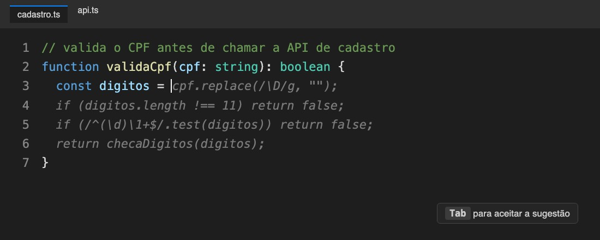
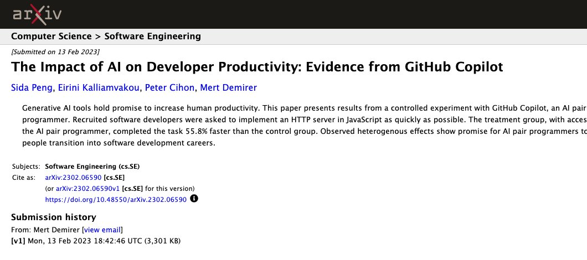
O que passar
- Trechos isolados: regex, mapeamento JSON, SQL
- Dúvidas sobre uma API desconhecida
Como passar
- Cole o contrato OpenAPI e um payload real
- Uma pergunta por vez
Como confiar
- Rode antes de colar
- Confira se o pacote sugerido existe
Nível 2
Agente supervisionado
Um agente lê e edita arquivos e roda comandos; cada ação pode passar por aprovação.
Claude Code,Cursore o modo agente doCopilot- Zup: criamos o
CodeGen, nosso próprio agente CLI, por segurança, privacidade e compliance1
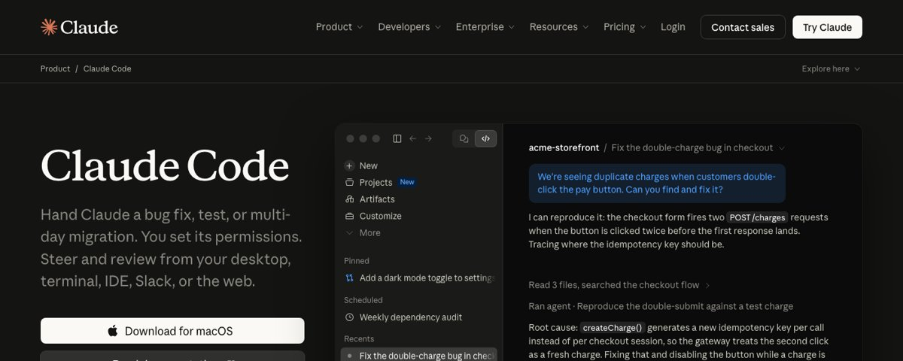
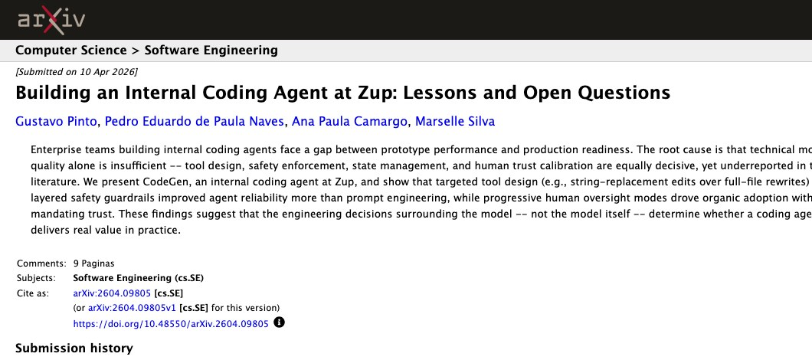
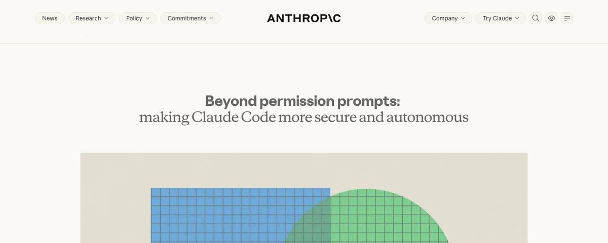
![The Stack, jul/2025[^replit]](img/niveis/replit.jpg)
Cases
- METR: com
Cursor, devs experientes levaram 19% mais tempo, mas se acharam mais rápidos3 - Anthropic: com sandbox, 84% menos pedidos de permissão1
- Zup +
Claude Code+ MCP doFigma: 8 telas de 10 dias para 2 horas4
Riscos e desafios
Replit: agente apagou o banco de produção em pleno code freeze2- Fadiga de aprovação vira YOLO sem sandbox
- Tokens: cada passo reenvia arquivos e contexto; média de US$ 13 por dev por dia ativo no
Claude Code5
O que passar
- Mudanças em poucos arquivos: um endpoint, um mapper, uma política
- Bugs com passo a passo para reproduzir
Como passar
- Peça o plano antes do código
- Aponte os arquivos e o teste que deve passar
- Modelo de fronteira só quando precisa
Como confiar
- Commit antes de cada pedido1
- Credenciais de homologação, nunca de produção
DeepSeek (política interna)Nível 3
Contexto codificado
As regras do time viram arquivos que o agente lê antes de agir, e os testes conferem o resultado.
AGENTS.md1,CLAUDE.mde.cursor/rules- Skills e servidores MCP com a documentação interna
- Esse entorno do agente (regras, ferramentas, testes, sandbox) é o harness2
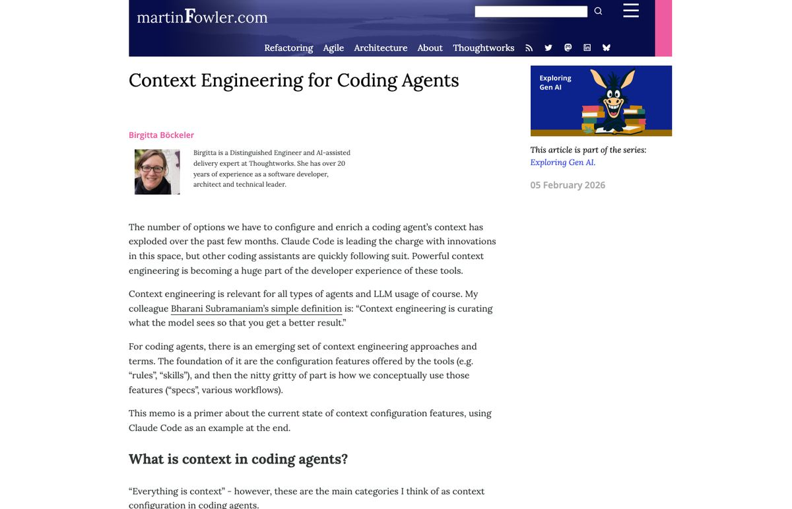
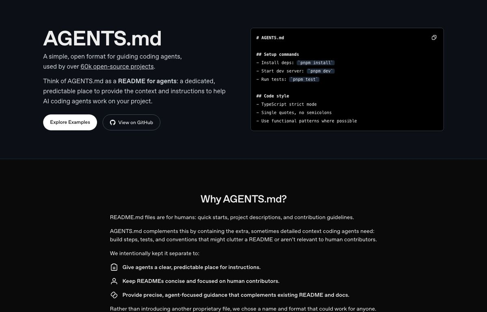
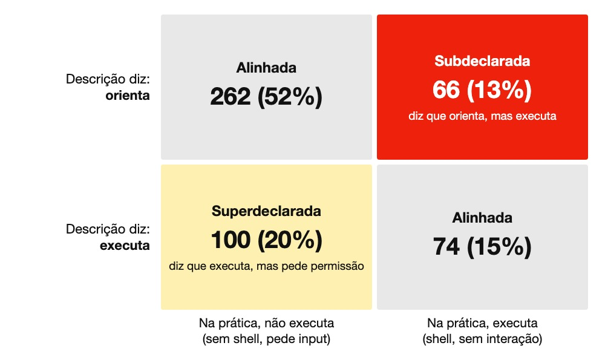
![Pillar Security, mar/2025[^pillar]](img/niveis/pillar.jpg)
Cases
AGENTS.mdem 60 mil projetos open source2- iFood: catálogo central com 502 skills para ~8 mil engenheiros
- RAMP, 441 repos com agentes: sem arquivo de regras, a complexidade do código sobe 53%; com regras, 27%3
Riscos e desafios
- 1 em 3 skills faz algo diferente do que a descrição diz
- 73,8% dos arquivos de regras nunca são atualizados3
- Rules File Backdoor: unicode invisível nas regras1
O que passar
- O que o time repete: novo endpoint no padrão, nova política no gateway
Como passar
AGENTS.mdcom o guia de APIs: nomes, erros, paginação, versão- Skills e MCP com a documentação interna
- Invista no harness, não no prompt1
Como confiar
- Lint e testes de contrato no CI
- Revisar o que a skill executa, não só a descrição
- Erro repetido vira regra no arquivo
Copilot, Cursor e Claude Code à documentação de engenharia por um servidor MCP, o Tompero Docs2Nível 4
Trabalho em segundo plano
A tarefa vira issue ou spec, o agente trabalha em segundo plano e devolve um PR.
Codex,Devin,Julese o coding agent doCopilot- Shapiro: o dev passa a atuar como gerente1
- Ferino et al.: a confiança decide quanto passar2
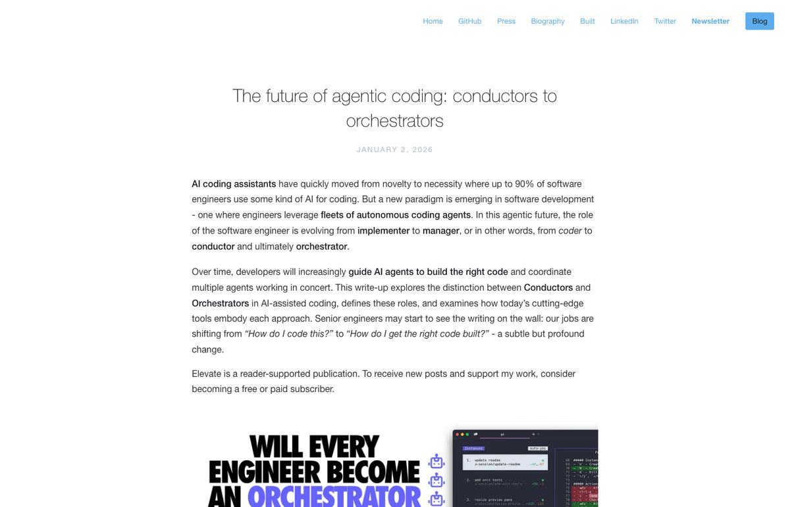
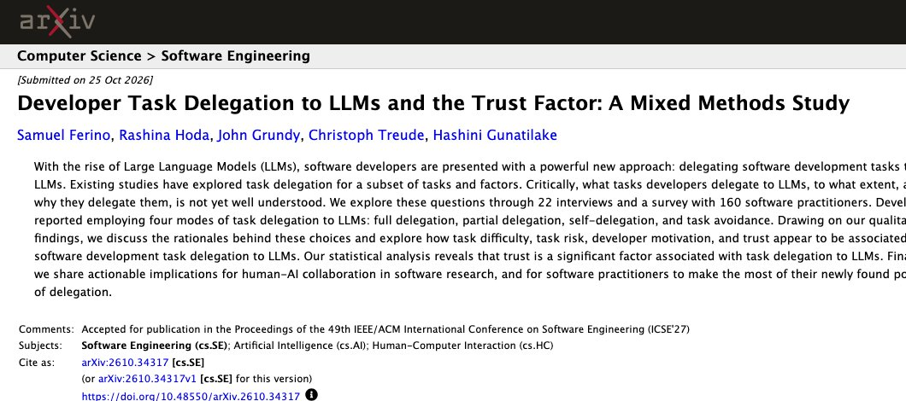
![Stripe, fev/2026[^stripe]](img/niveis/stripe.jpg)
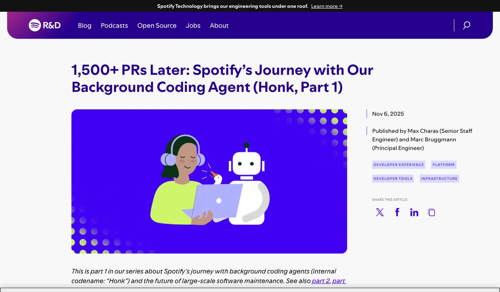
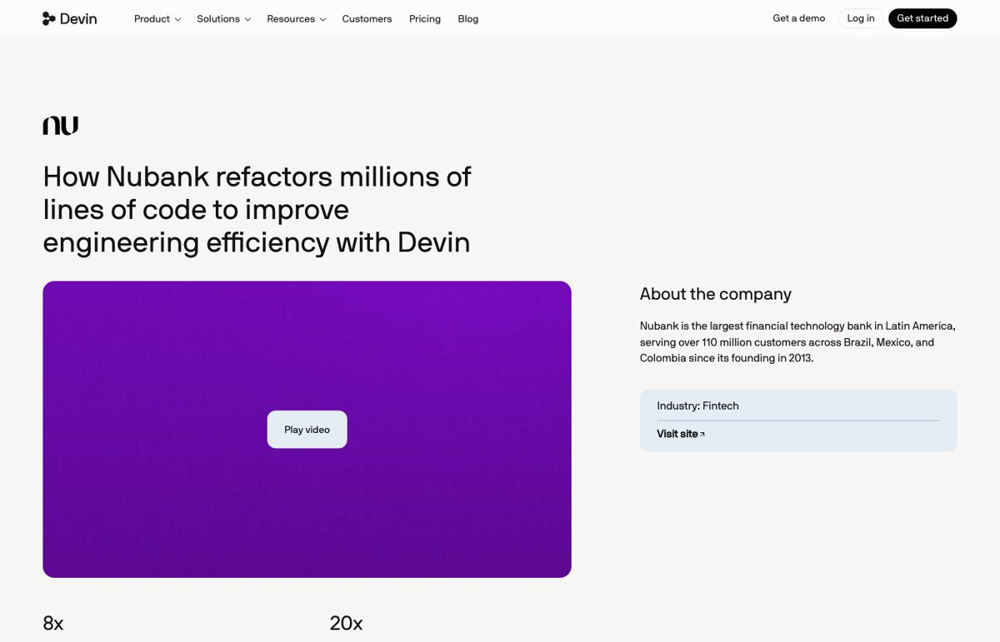
Cases
- Stripe
Minions: +1.000 PRs mergeados por semana1 - Spotify
Honk: +1.500 PRs em produção2 - Nubank:
Devindividiu um ETL de 6 milhões de linhas, 8 a 12x mais eficiente3
Riscos e desafios
- A revisão humana vira gargalo2
- Uber: o orçamento de IA de 2026 acabou em abril, com até US$ 2.000 por engenheiro/mês4
- O dev perde o modelo mental do código
O que passar
- Issues fechadas: migração, testes, correção de vulnerabilidade
Como passar
- Spec com critério de aceite e fora de escopo
- Fronteira para planejar, modelo eficiente para executar
Como confiar
- Teste que falha sem a mudança
- Leitura humana do que toca auth, dados e segredos1
- Custo por PR entregue, não por pessoa
Devin migrou 59 BFFs de .NET para Java 6x mais rápido2Nível 5
Workflow e orquestração
Agentes viram etapas do processo, disparados por eventos, e vários rodam ao mesmo tempo.
Claude CodeeCodexrodando no GitHub ActionsCodeRabbite oCopilotfazem a primeira revisão de PR- Yegge orquestra dezenas de agentes com o
Gas Town1
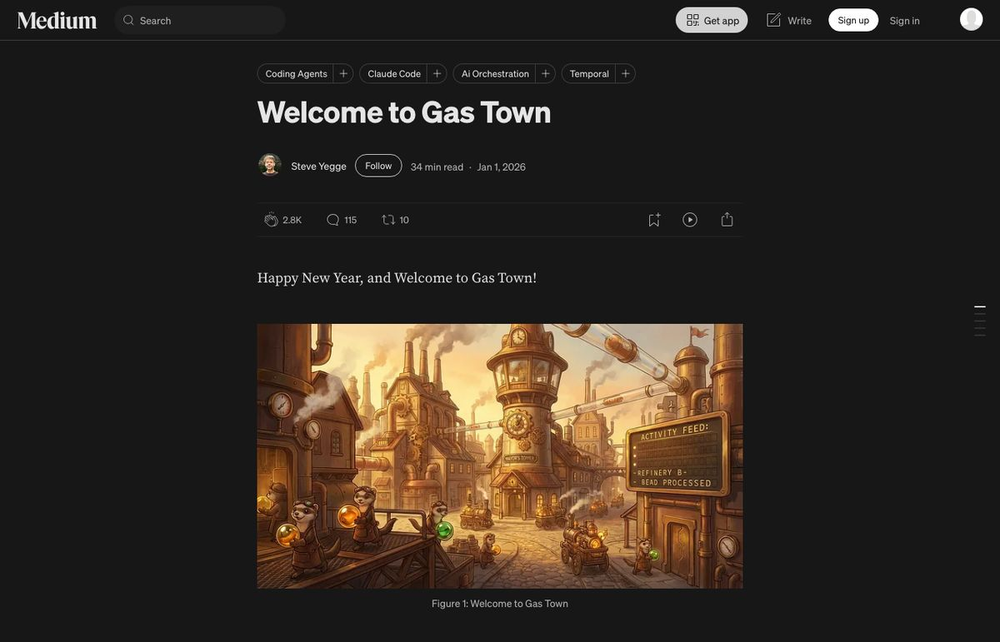
![Park et al., set/2026[^park]](img/niveis/park.jpg)
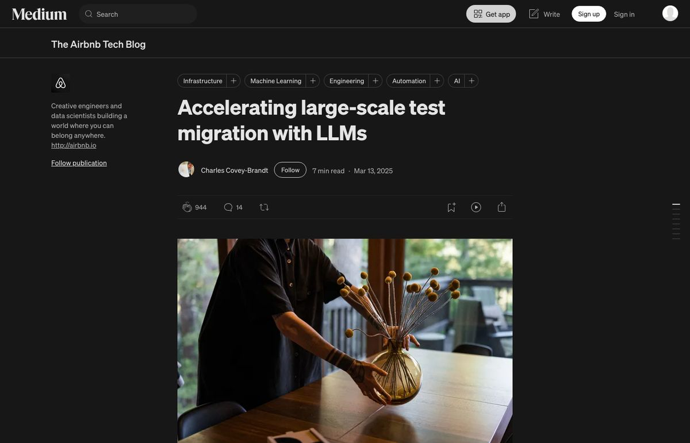
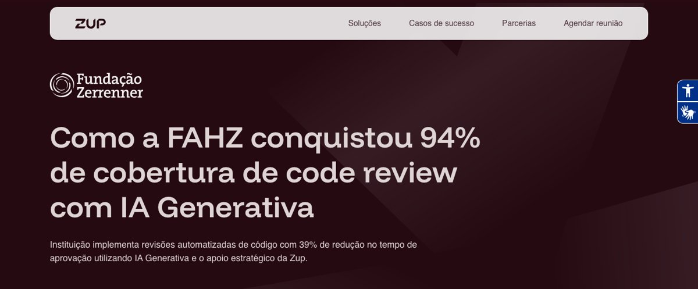
![Aikido, dez/2025[^aikido]](img/niveis/aikido.jpg)
Cases
- Airbnb: 3.500 testes migrados em 6 semanas1
- iFood: um gestor criou um revisor automático que comenta em todo MR (uso interno)
- FAHZ (Ambev) + Zup: revisão automática passou a cobrir 94% dos PRs, antes 11%2
Riscos e desafios
- PromptPwnd: issue injeta prompt no CI3
- s1ngularity: malware usou CLIs de IA4
Gas Town: milhares de dólares por mês5
O que passar
- Etapas do pipeline: alertas de SAST, migrações em lote, primeira revisão
Como passar
- Gatilhos por evento: alerta, issue, PR
- APIs como ferramentas MCP, com escopo mínimo, como no AI Gateway da Sensedia1
- Roteador de modelos no gateway: AT&T gastou 56% menos2
Como confiar
- Menor privilégio e filtro de dados pessoais
- Humano antes de ação irreversível
- Teto e painel de tokens por agente3
Claude Code com MCP de GitLab, banco e Kubernetes roda num cron de 1 em 1 minuto: vigia logs e pods, consulta produção e ajusta MRs (uso interno)Nível 6
Fábrica autônoma
Uma spec entra e software sai; ninguém escreve nem revisa o código, e o humano desenha a verificação.
- StrongDM: cenários fora do repositório conferem o resultado1
- OpenAI: com harness engineering, 1 milhão de linhas e nenhuma escrita à mão2
- Shapiro chama de dark factory3
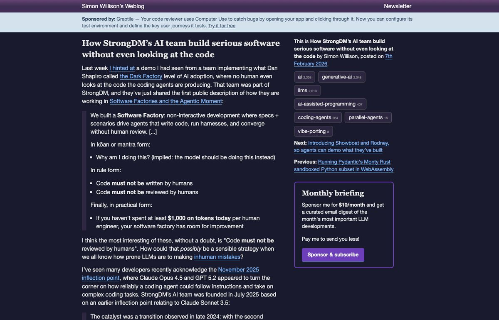
O que passar
- Um serviço inteiro, a partir da spec
Como passar
- Cenários de negócio fora do repositório
- Gêmeos das APIs de terceiros: mocks e sandboxes
Como confiar
- Medir cenários satisfeitos, não linhas
- Canário e rollback automático
- Escopo: qual problema resolver, o que fica fora e qual é o critério de aceite
- Contrato: fixar a API e aprovar cada dependência nova
- Revisão: ler linha a linha o que toca auth, dados pessoais e segredos
- Produção: rollback, orçamento de tokens e o que dizer ao cliente quando cai